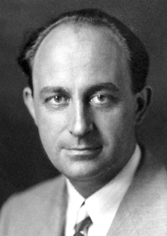
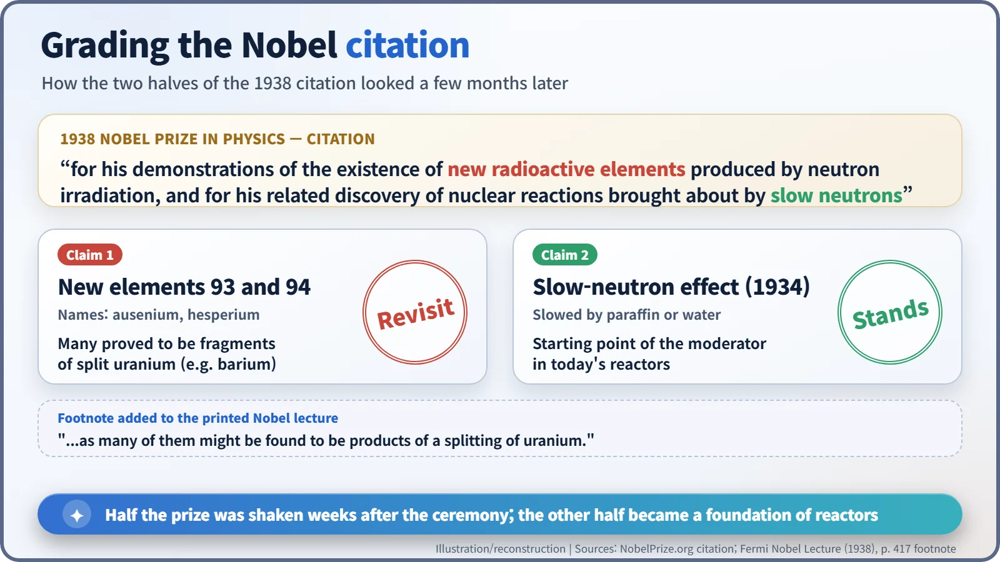
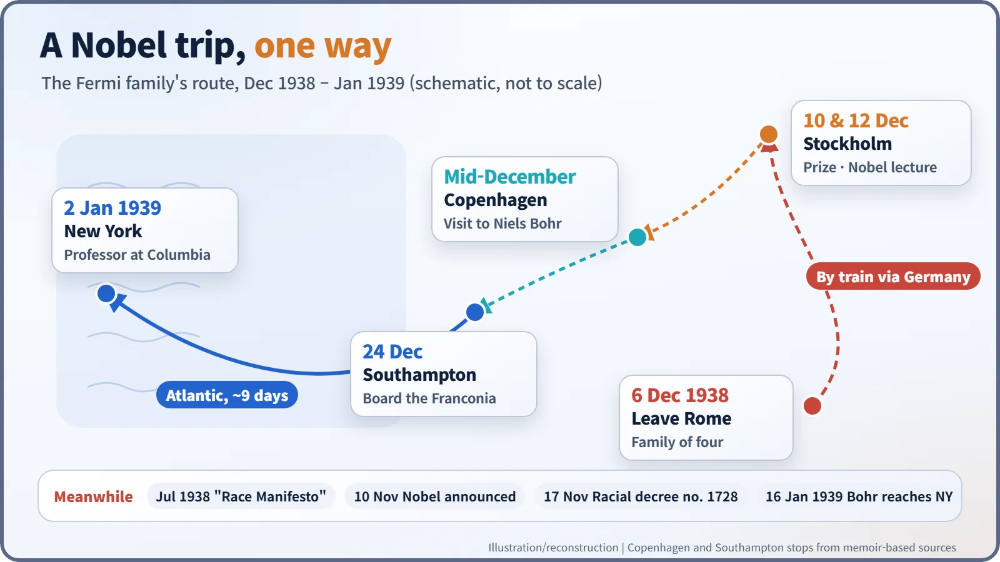
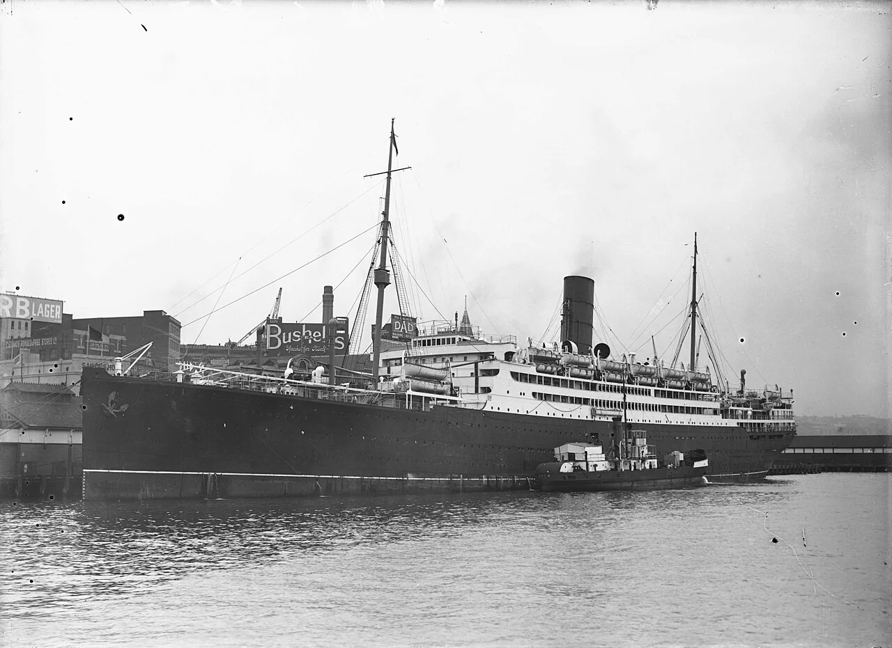

Nuclear History · 059
A Nobel Ticket Out — Enrico Fermi's Prize and Escape to America (1938)
Italy's racial laws had already made up the Fermis' minds; the Nobel ceremony in Stockholm simply gave the whole family a reason to board the train.
In the summer of 1938, as Fascist Italy adopted racial laws aimed at Jews, Enrico Fermi and his Jewish wife Laura quietly decided to emigrate. The Nobel Prize in Physics, announced on 10 November, gave the whole family a legitimate reason to travel to Stockholm, and from there they sailed to New York, arriving on 2 January 1939. There was a twist: half of the prize citation, the "new radioactive elements", soon turned out to be something else entirely.
A one-way ticket north
Rome railway station, 6 December 1938. The 37-year-old physicist Enrico Fermi (1901–1954) boarded a northbound train with his wife Laura, their seven-year-old daughter Nella and two-year-old son Giulio. Old friends from the physics institute, Franco Rasetti and Edoardo and Ginestra Amaldi, came to see them off. The official destination was Stockholm and the Nobel Prize ceremony. The unofficial plan was simpler: the Fermis were not coming back. [3] [4]

A decision made quietly, that summer
On paper, Fermi was the pride of Italian science: professor of theoretical physics at the University of Rome and a member of the Royal Academy of Italy. His team had spent 1934 bombarding element after element with neutrons, creating a string of new radioactive substances, and had found that neutrons slowed down by paraffin were captured far more readily. [1]
Politics changed everything. Drawing closer to Nazi Germany, Mussolini's regime published the so-called "Manifesto of Race" in July 1938. On 17 November it issued Royal Decree no. 1728, which restricted the civil rights of Italian Jews and pushed them out of public office and higher education. Laura Capon Fermi (1907–1977) was Jewish. Several of Fermi's younger colleagues lost their jobs.
According to a biography of Laura written by their daughter Nella, the couple had already decided to leave Italy in the summer of 1938. Fermi wrote to American universities whose offers he had once turned down, phrasing his letters carefully because of censorship: the reasons for declining, he hinted, no longer existed. Offers came back, and he chose Columbia University in New York, where he had lectured in the summer of 1936. [4]
One phone call, one perfect excuse
The problem was how to get out. A whole family leaving at once could raise suspicion, and taking money out of the country was restricted. Then, on 10 November 1938, the call came from Stockholm: Fermi had won the Nobel Prize in Physics, unshared. [1]
The prize gave the family a legitimate reason to travel together, and the prize money gave them a fresh start abroad. According to the Enrico Fermi Museum in Rome, he left with permission for a six-month stay while intending from the outset to settle in the United States. The order of events matters here. Fermi did not plan an escape because of the Nobel Prize; the prize opened the door for an escape that was already planned. [3]
No uniform, no salute
At the ceremony in Stockholm on 10 December, Fermi received the prize from the King of Sweden. He did not wear the uniform of the Italian Academy and did not give the Fascist salute. Italian newspapers, the Fermi Museum notes, branded him unpatriotic. A story often told adds that shaking the king's hand instead of saluting was what caused the outrage. For a man who was not going home, the criticism no longer mattered much. [3]
The twist hidden in the citation
The official citation reads: "for his demonstrations of the existence of new radioactive elements produced by neutron irradiation, and for his related discovery of nuclear reactions brought about by slow neutrons." The "new elements" were elements 93 and 94, heavier than uranium (element 92). In his Nobel lecture on 12 December, Fermi explained that "we, in Rome, use to call the elements 93 and 94 Ausenium and Hesperium respectively." [1] [2]
Within days, in Berlin, Otto Hahn and Fritz Strassmann found barium in uranium that had been hit by neutrons, a sign that uranium could split almost in half. When Fermi's lecture went to print, he added a footnote: the discovery of barium "makes it necessary to reexamine all the problems of the transuranic elements, as many of them might be found to be products of a splitting of uranium." In effect, the laureate himself asked the world to take a second look at half of his prize-winning work. [2]

The other half held firm. Slowing neutrons down with water or graphite, the job of the moderator in a reactor, grows directly out of the 1934 slow-neutron discovery. The real element 93, neptunium, was identified in the United States in 1940.
The one-way journey ends in New York
After the ceremony, the family did not return to Italy. According to accounts based on Laura Fermi's memoir, they visited Niels Bohr in Copenhagen, then on Christmas Eve boarded the Cunard liner Franconia at Southampton, England. After a crossing of about nine days, they arrived in New York on 2 January 1939. [5]


Exactly two weeks later, on 16 January, Bohr's own ship docked in New York carrying the news of fission. Fermi threw himself into the new problem, and on 2 December 1942 in Chicago he led the first controlled nuclear chain reaction. The family became US citizens in 1944. [6] [1]
Laura's father, Admiral Augusto Capon, stayed in Italy. He died at Auschwitz in 1943. The racial laws split one family's fate in two, and they sent Italy's finest physicist to America.